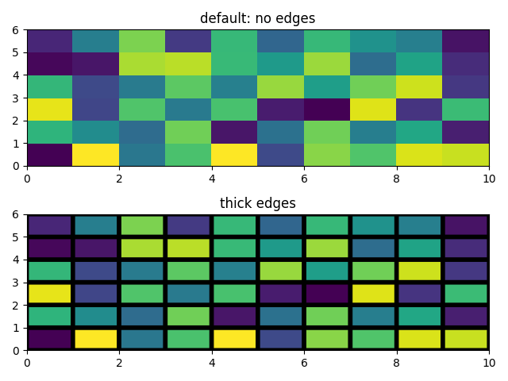

Note
Click here to download the full example code
Pcolor Demo¶
Generating images with pcolor().
Pcolor allows you to generate 2-D image-style plots. Below we will show how to do so in Matplotlib.
import matplotlib.pyplot as plt
import numpy as np
from matplotlib.colors import LogNorm
A simple pcolor demo¶
Comparing pcolor with similar functions¶
Demonstrates similarities between pcolor(),
pcolormesh(), imshow() and
pcolorfast() for drawing quadrilateral grids.
# make these smaller to increase the resolution
dx, dy = 0.15, 0.05
# generate 2 2d grids for the x & y bounds
y, x = np.mgrid[slice(-3, 3 + dy, dy),
slice(-3, 3 + dx, dx)]
z = (1 - x / 2. + x ** 5 + y ** 3) * np.exp(-x ** 2 - y ** 2)
# x and y are bounds, so z should be the value *inside* those bounds.
# Therefore, remove the last value from the z array.
z = z[:-1, :-1]
z_min, z_max = -np.abs(z).max(), np.abs(z).max()
fig, axs = plt.subplots(2, 2)
ax = axs[0, 0]
c = ax.pcolor(x, y, z, cmap='RdBu', vmin=z_min, vmax=z_max)
ax.set_title('pcolor')
fig.colorbar(c, ax=ax)
ax = axs[0, 1]
c = ax.pcolormesh(x, y, z, cmap='RdBu', vmin=z_min, vmax=z_max)
ax.set_title('pcolormesh')
fig.colorbar(c, ax=ax)
ax = axs[1, 0]
c = ax.imshow(z, cmap='RdBu', vmin=z_min, vmax=z_max,
extent=[x.min(), x.max(), y.min(), y.max()],
interpolation='nearest', origin='lower')
ax.set_title('image (nearest)')
fig.colorbar(c, ax=ax)
ax = axs[1, 1]
c = ax.pcolorfast(x, y, z, cmap='RdBu', vmin=z_min, vmax=z_max)
ax.set_title('pcolorfast')
fig.colorbar(c, ax=ax)
fig.tight_layout()
plt.show()
Pcolor with a log scale¶
The following shows pcolor plots with a log scale.
N = 100
X, Y = np.mgrid[-3:3:complex(0, N), -2:2:complex(0, N)]
# A low hump with a spike coming out.
# Needs to have z/colour axis on a log scale so we see both hump and spike.
# linear scale only shows the spike.
Z1 = np.exp(-(X)**2 - (Y)**2)
Z2 = np.exp(-(X * 10)**2 - (Y * 10)**2)
Z = Z1 + 50 * Z2
fig, (ax0, ax1) = plt.subplots(2, 1)
c = ax0.pcolor(X, Y, Z,
norm=LogNorm(vmin=Z.min(), vmax=Z.max()), cmap='PuBu_r')
fig.colorbar(c, ax=ax0)
c = ax1.pcolor(X, Y, Z, cmap='PuBu_r')
fig.colorbar(c, ax=ax1)
plt.show()
References¶
The use of the following functions, methods and classes is shown in this example:
import matplotlib
matplotlib.axes.Axes.pcolor
matplotlib.pyplot.pcolor
matplotlib.axes.Axes.pcolormesh
matplotlib.pyplot.pcolormesh
matplotlib.axes.Axes.pcolorfast
matplotlib.axes.Axes.imshow
matplotlib.pyplot.imshow
matplotlib.figure.Figure.colorbar
matplotlib.pyplot.colorbar
matplotlib.colors.LogNorm
Keywords: matplotlib code example, codex, python plot, pyplot Gallery generated by Sphinx-Gallery